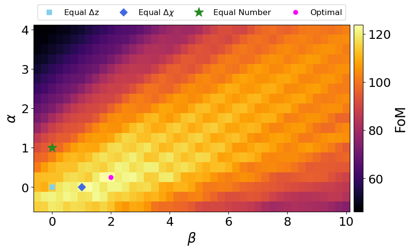

Motivation
Weak lensing and large scale structure are powerful probes of cosmology. Galaxies form in dark matter halos, so galaxy locations can be used as a tracer of the underlying large scale structure of the universe. Similarly, light traveling from distant galaxies is lensed by intervening structure, causing a statistical correlation in the measured shapes of galaxies along the same line of sight. The Vera C. Rubin Observatory's Legacy Survey of Space and Time (LSST) will observe tens of billions of galaxies over the next 10 years, from which galaxy locations and shapes can be measured. One way that information can be extracted from these measured locations and shapes is through the 3x2pt method. This is a combination of 3 different two-point correlation functions: galaxy clustering, which is the auto-correlation between galaxy shapes; cosmic shear, which is the auto-correlation between galaxy shapes; and galaxy-galaxy lensing, which is the cross-correlation between the two.
If accurate spectroscopic redshifts could be attained for all the galaxies in a sample, you can compute 3D correlation functions. However, it will not be feasible to obtain spectroscopic redshifts for the tens of billions of galaxies that LSST will observe, and we must instead rely on photometric redshifts (photo-z's). Since photo-z's are less accurate, the galaxies are instead sorted into tomographic redshift bins, and angular correlation functions are computed for samples within and between bins. The necessity of binning raises the question of how to design the bins to extract the maximum amount of cosmological information.
In addition to the question of binning, LSST will observe enough galaxies that the bins will not be shot noise limited. This allows us to attempt to remove galaxies with the poorest photo-z's from the sample to improve the cosmology constraints. The other question we attempt to answer with this paper is how to make this selection of galaxies with the best photo-z's using neural network classifiers.
Methodology
Tomographic Binning
We start with three simple tomographic bin definitions: equally spaced in redshift; equally spaced in co-moving distance; and equal numbers of galaxies in each bin. To systematically probe the space of other possible bin definitions, we introduce the binning equation. The binning equation defines an integral, M , which integrates over the redshift distribution of your sample and the co-moving distance distribution of your sample, rasied to powers of alpha and beta respectively. We can then compute this M value for different values of alpha and beta, which we then divide into 12 even intervals for 12 tomographic bins. By interpolating between this M value and redshift, we can convert the M values into redshift values for the bin edges. To determine which set of bin edges is the "best", we use Fisher Forecasting to compute a Figure of Merit (FOM) for each choice of bin edges, and maximize the FOM.
On the left is a heatmap showing the FOM values computed for a large array of alpha and beta values. The light blue square marks the alpha and beta values that correspond to bins equally spaced in redshift, the dark blue diamond marks values corresponding to bins equally spaced in co-moving distance, and the green star marks values corresponding to bins with an equal number of galaxies in each. The pink circle marks the alpha and beta that maximize the FOM, at alpha=0.25 and beta=2.0.
Sample Selection with Neural Network Classifiers
We train two Neural Network Classifiers (NNCs) to select galaxies with good photo-z's. The first type we call an Outlier NNC, and is based on Broussard & Gawiser 2021. The NNC requires a training sample consisting of galaxies with photometry, a spectroscopic redshift, and a photo-z estimate. When applied to a sample of galaxies with only photometry and photo-z's, it will then estimate a confidence value for each galaxy where a confidence close to 1 corresponds to extreme confidence that the photo-z estimate for that galaxy is accurate, and a confidence close to 0 corresponds to high confidence that the photo-z estimate for that galaxy is an outlier. We can then select galaxies with high confidence values to use for cosmology, while rejecting galaxies with low confidence.
The other NNC takes advantage of the fact that once a galaxy is sorted into a tomographic bin, its exact redshift estimate is no longer needed. This means that we only really care about whether the photo-z estimate is good enough to place it into the correct bin. If a bin is wide enough, something that would be considered an outlier by the Outlier NNC could still be sorted into the correct bin, and therefore should remain in the sample. We call the NNC that estimates a confidence value that a galaxy is sorted into the correct bin the Misclassification NNC.
On the right is an example showing the Outlier NNC sample selection. The x-axis is the true redshift for galaxies in our sample, and the y-axis is the photo-z estimate, with non-outlier estimates falling near the diagonal. In black are all the galaxies in our sample, while the blue regions show the 75% of the sample with the highest confidence values.
Results
We used the cosmoDC2 sample of LSST-like simulated galaxies to test the tomographic binning and NNC sample selection methodologies.